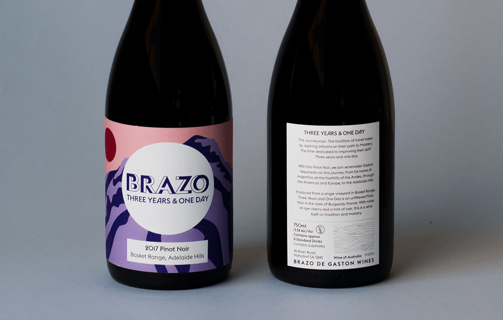
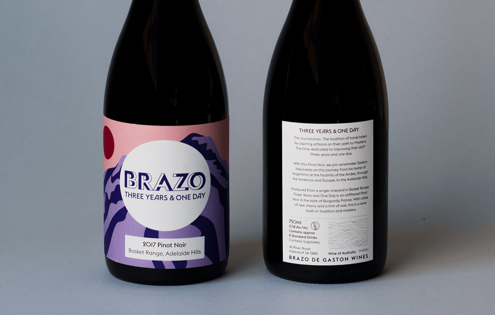

Brazo De Gaston
Graphic Design, Labeling
 

Brazo De Gaston is the wine of Gaston Sepulveda, traveller and winemaker from Mendoza, Argentina. This project encompassed the naming, branding, concept and labeling of Sepulveda’s first Australian produced wines.
Brazo, meaning arm in Spanish, is a reference to the great work Sepulveda had undertaken culminating to his arrival in Australia, and creation of this wine. Each bottle is backed with a story from his global journey, from the foothills of the Andes, through the USA, Europe, Asia to Australia, drawing correlations between the adventure and the wine in the bottle.
Aimed at a audience of younger wine drinkers, the bottle designs are bold, colourful and adventurous. The illustrations feature abstract references to the stories of each wine.